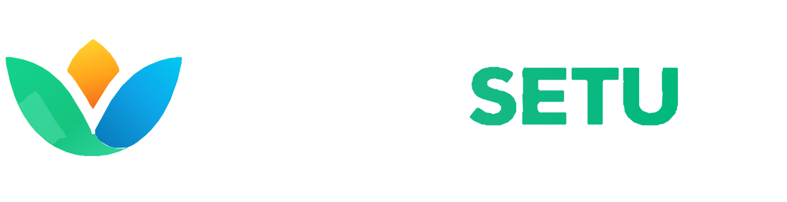

Light surface

 BRAND GUIDELINES
BRAND GUIDELINESUse committed logo assets as supplied. Select the correct variant by surface contrast and keep original proportions.
These previews load the actual committed SVG files. Do not redraw or approximate the artwork.


Use semantic tokens in components rather than one-off hard-coded colours.
#0F2D4A#16C47F#0EA5E9#F59E0B#F4F7F9#FFFFFF#10283B#657D8DBrand correctness includes contrast, proportions and accessibility.
Light surfaces use a navy wordmark. Dark surfaces use a white wordmark. Update sidebar and other visible brand placements on theme changes.
Use auto height or object-fit: contain; do not stretch, rotate, crop or add unapproved effects.
Full lockup on brand pages, horizontal lockup in compact headers/receipts, mark-only for app icons and tiny navigation.
Avoid busy imagery and validate contrast across Light, Dark, Ocean, Forest and High Contrast themes.
assets/. Do not claim an original PNG is deployed unless the exact PNG exists in the repository.